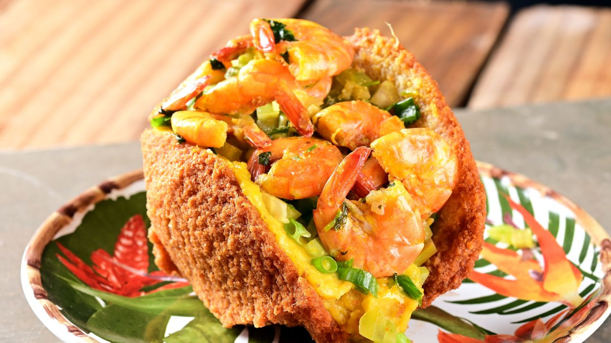
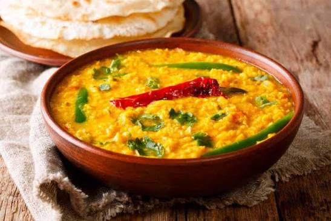

CONHEÇA MAIS SOBRE:
OS PRATOS TÍPICOS DA REGIÃO DO NORDESTE

Acarajé
Bahia
Acarajé
Ingredientes
- Feijão-fradinho
- Cebola
- Sal
- Azeite de dendê
- Camarão seco, vatapá e salada para rechear
Modo de preparo
- Deixe o feijão de molho e retire as cascas.
- Triture com cebola e sal até formar uma massa.
- Modele os bolinhos.
- Frite em azeite de dendê.
- Abra e recheie.
Importância: O acarajé possui raízes na África Ocidental e grande importância cultural e religiosa na Bahia. O Ofício das Baianas de Acarajé é Patrimônio Cultural do Brasil desde 2005.

Baião de Dois
Ceará
Baião de Dois
Ingredientes
- Arroz
- Feijão
- Carne-seca
- Queijo coalho
- Cebola
- Alho
- Manteiga de garrafa
Modo de preparo
- Cozinhe o feijão.
- Refogue alho e cebola.
- Acrescente o arroz e o feijão.
- Misture a carne-seca.
- Finalize com queijo coalho e manteiga de garrafa.
Importância: O baião de dois se tornou símbolo da cozinha sertaneja. A combinação de arroz e feijão representa uma alimentação prática baseada em ingredientes acessíveis.

Carne de Sol com Macaxeira
Nordeste
Carne de Sol com Macaxeira
Ingredientes
- Carne de sol
- Macaxeira
- Manteiga de garrafa
- Cebola
- Sal e temperos
Modo de preparo
- Dessalgue a carne, se necessário.
- Corte e frite ou grelhe.
- Cozinhe a macaxeira até ficar macia.
- Doure a macaxeira na manteiga.
- Sirva junto com a carne.
Importância: A carne de sol surgiu como uma forma tradicional de conservação por meio do sal e da secagem. Com a macaxeira, tornou-se um prato muito conhecido da culinária sertaneja.

Vatapá
Bahia
Vatapá
Ingredientes
- Pão ou farinha
- Camarão
- Leite de coco
- Amendoim
- Castanha
- Azeite de dendê
- Cebola e temperos
Modo de preparo
- Hidrate o pão ou misture a farinha com líquido.
- Bata com leite de coco, amendoim e castanha.
- Leve ao fogo com o camarão e os temperos.
- Mexa até engrossar.
- Finalize com dendê.
Importância: O vatapá representa principalmente a influência africana na culinária baiana, combinada aos ingredientes disponíveis no Brasil.

Cuscuz Nordestino
Nordeste
Cuscuz Nordestino
Ingredientes
- Flocos de milho
- Água
- Sal
- Manteiga
Modo de preparo
- Misture o milho com água e sal.
- Deixe hidratar por alguns minutos.
- Coloque na cuscuzeira.
- Cozinhe no vapor até ficar macio.
- Sirva com manteiga ou acompanhamentos.
Importância: O cuscuz de milho é fundamental na alimentação de muitas famílias nordestinas e faz parte do cotidiano e das tradições familiares da região.

Moqueca Baiana
Bahia
Moqueca Baiana
Ingredientes
- Peixe ou frutos do mar
- Leite de coco
- Azeite de dendê
- Tomate
- Cebola
- Pimentão
- Coentro
- Limão
Modo de preparo
- Tempere o peixe com limão e sal.
- Monte camadas de peixe, tomate, cebola e pimentão.
- Acrescente o leite de coco.
- Cozinhe até o peixe ficar macio.
- Finalize com dendê e coentro.
Importância: A moqueca baiana representa o encontro de tradições indígenas, africanas e portuguesas e é um dos pratos mais marcantes do litoral baiano.